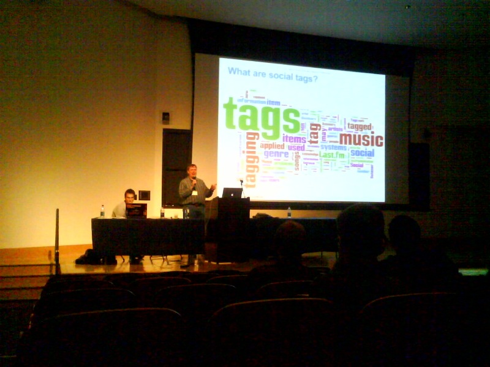

SanFran Music Tech Summit - Tech Talk

Panelists:
- Colin Brumelle - Moderator
- Tom Conrad - CTO Pandora
- Marc Urbaitel - CTO In-Ticketing
- Shaun Haber - Warner Bros. Records - Director of operations, using Drupal to build an artist platform.
- Jeremy Riney - Project Playlist, CTO, Founder
- Jack Moffit - Xiph, Chesspark - IM, gaming
Marc - uses php - quicker turnaround time, lets them be much more nimble. Open source is good.
Shaun - open source CMS - chose Drupal: a big reason is active developer community.
Jeremy - also uses Drupal - Paylist is the largest Drupal user with 25 million active users.
Tom - were on Java, Oracle, Jetty servlets due to legacy reasons. Oracle was a disaster, so they ported it all to postgres. Re-implemented Oracle procesdures at the Java language. Some core routines in C, - huge memcachd - 200 servers, 2000 interactions per second. 64 bits linux, intel CPUs, the shiny frontend is flash. They didn't have anyone who knows about flash. Used openLazlo to build the application using javascript and their framework and compile it down to flash. Tom says Lazlo is a great piece of software.
Jack - Perl, then Python, with webware frameworks, mysql, postgres, now Jango (rails-like python), they run everything on Amazon EC2 and S3. Wrote lots of Javascript - use all scriptaculous, prototype and others.
Colin: Is EC2 the future?
Jack - Went through CO-LO hell. Was hard to provision new hardware. On Amazon, they can type one command and get 10 more machines. Jack is very happy with EC2, S3. Jeremy was concerned with complexity but Jack says it was not too hard.
Tom: If they were starting today, they would be considering cloud computing like EC2. The hardest part to scale horizontally is the database. Risk become predicting the future. How do you provision just the right amount of servers. This would become a guessing game.
Marc uses cloud computing to do scaling testing (buying lots of tickets at once).
Tom - also the cloud is useful for data recovery - use the cloud to serve as the failover. Pandora decided to do their own CDN. The save much money they by doing it themselves.
Tom says don't by Foundry load balancers
Questions from Derick of CDBaby - Tells the story about how he rewrote CD Baby for PHP and Ruby On Rails. After 2 years of frustration, he threw it all away. Nothing to do with Rails - but keeping the two systems (PHP and Rails) alive was hard. Derick also lauds EC2. Tom does say that you are still paying a margin to Amazon for this so it could cost you more than doing it yourself.
Tom talks about "test driven development". They can rip their system apart and put it back together and be confident that it will work because of their tests

This seems like a discussion of the technology at a nuts and bolts level, a "muffler" level like they always say on the Gillmor Gang. Servers and programming languages and such.
Has there been any discussion about the technology at a "music" level, i.e. how the various systems work, why they think that one approach to technological mediation of music is better than another, etc.?
Posted by jeremy on May 08, 2008 at 05:59 PM EDT #
Thanks for the transcription Paul! Do you know whether there are some pod or screencasts around?
Posted by Thomas Bonte on May 09, 2008 at 04:11 AM EDT #
Nice list. Thanks for taking the time to put it together. By the way it's Django not Jango. You know, the <a href ="http://en.wikipedia.org/wiki/Django_Reinhardt">musician</a>
Posted by Douglas Eck on May 12, 2008 at 10:23 AM EDT #
It will be very interesting to see how this plays out in the next five years.
Posted by Production Music on May 28, 2008 at 02:56 AM EDT #